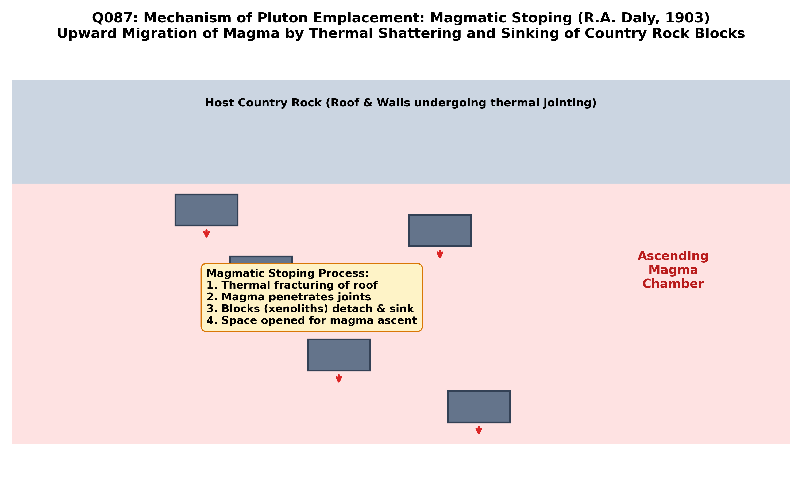
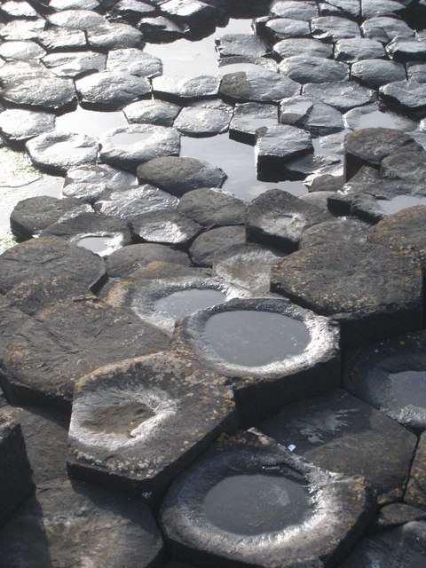
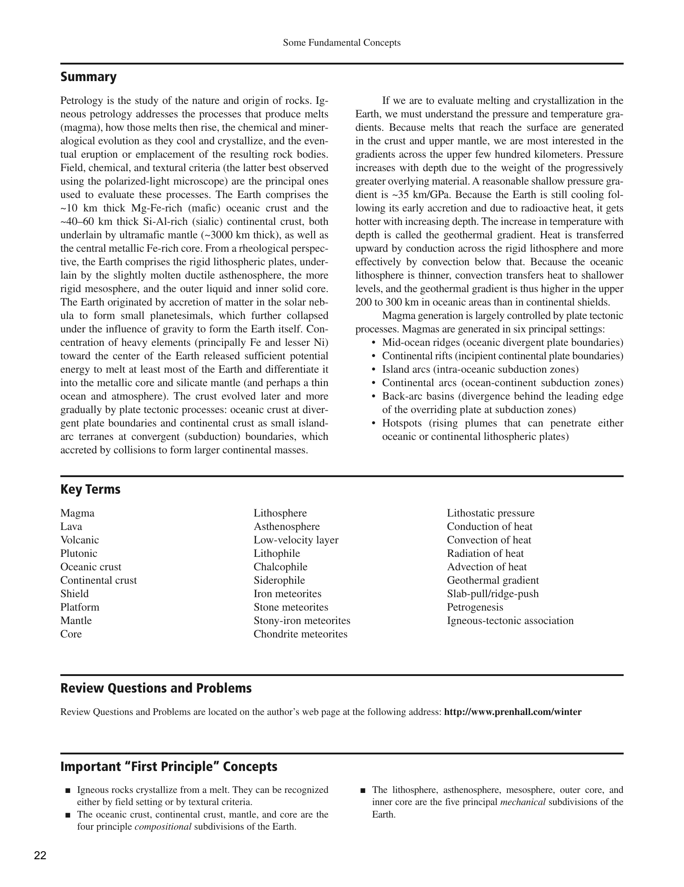
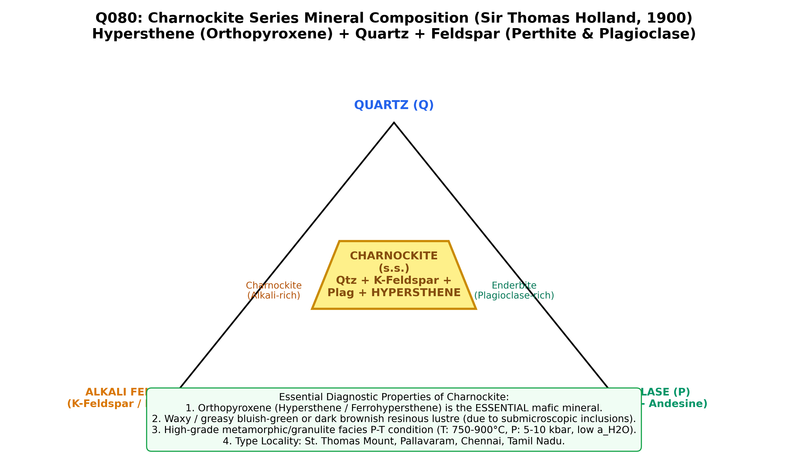
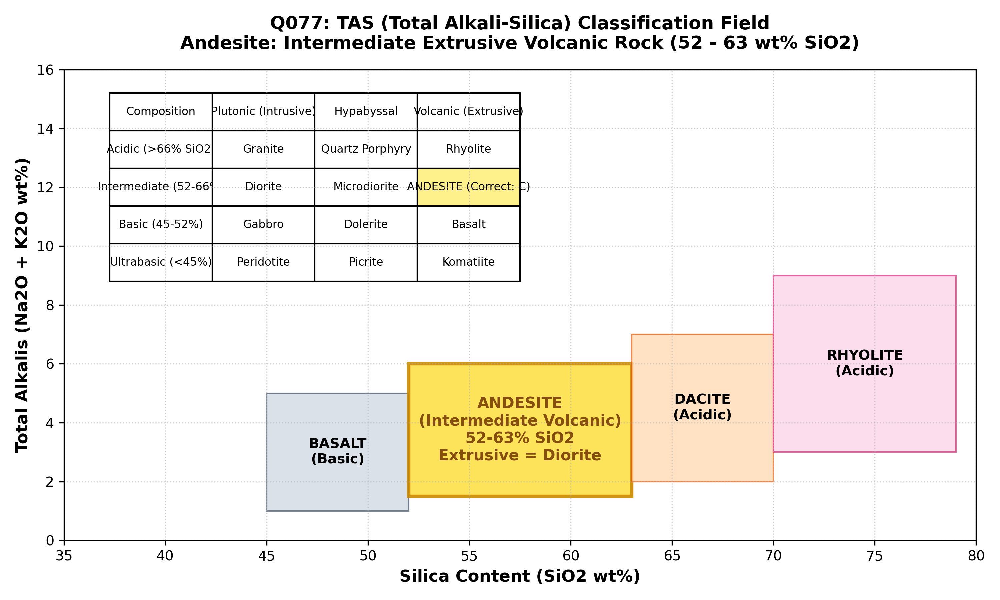

a rr 7 | Rocks I: Igneous Rocks RES eet i maar a a Rocks form a major part of the earth’s crust, They may be defined as aggregates of minerals. Some rocks, such as quartzite (quartz) and marble (calcite), contain grains of one mineral only but most are composed of a variety of different minerals. The rocks are broadly classified into three groups: (i) igneous, (/i) sedimentary, and (si?) metamorphic.
Igneous Rocks. Igneous rocks arc farmed by cooling and solidification of magma. Typical igneous rocks are granite and basalt.
Sedimentary Rocks. Sedimentary rocks are formed by consolidation and cementation of the sediments deposited under water. Typical sediment- i tary rocks are sandstone, limestone and shale.
Metamorphic Rocks, Metamorphic rocks are formed when the pre-cx=4 isting rocks have been changed in texture and composition by increased; temperature and pressure. Typical rocks of this kind are schist and gneiss. 5.2. ROCK CYCLE Pa i The rock cycle shows the relationship between the three types of racks, i! that is the igneous, sedimentary and metamorphic rocks. One type of rock ‘ changes slowly to another type. Erosion produces sediment which is transported and deposited into deep basins under the sea. Then it hardens to form “sedimentary rocks". If these rocks are deeply buried, the temperature i and pressure turn them into “metamorphic rocks”. Intense heat at great \! depths melts metamorphic rocks and produces magma. The magma may Tiss i up and reach the earth's surface where it cools to form “igneous rocks”. At thg surface, igneous rocks are exposed 10 weathering and erosion, and the i cycle begins again. i 5.3. IGNEOUS ROCKS.,:. ‘ is sed of igneous ro Approximately 90% of the earth's crust is compose neo cs but sie greas abundance is hidden on the earth's surface by a relatively hin layer of sedimentary and metamorphic rocks. “Igneous rocks are to ed by cooling and solidification of magma. ‘Magma’ is a hot viscous, siliceoy melt containing water vapor and gases. It comes fram great depth belay the earth's surface. It is composed mainly of O, Si, Al, Fe, Ca, Mg, Na ane K. When a magma comes out upon the earth's surface, it looses its gases Such a magma is called “/ava". 4 £,3.1, Chemical Composition d: The chemical composition of igneous rocks exhibit a fairly limi ted range. The largest oxide component is $i, which in common igneous racks ranges from 40 to 75 percent by weight. The percentage of Al,O, general ly ranges from about 10-20% and each of the other major components (e.g, oxides of Ca, Mg and Fe) seldom exceed 10%. a Acid and Basic Rocks. The composition of igneous rocks depends upon the composition of the magma from which they are originated. Maginas ar! divided into two broad groups: (f) acid magma, and (ii) basic magma, Th “acid magna” is rich in Si, Nu and K, and poor in Cu, Mg and Fe. Th 5 “basic magma” on the other hand, is rich in Ca, Mg and Fe, and poor in Si, On the basis of the silica percentage present, igneous rocks are classified ' into the following groups. 2 (i) Ultrabasic Rocks, These contain less than 45% silica, eg peridotite, a tii) Basic Rocks. These contain silica between 45% and 55%, exg, i gabbro and basalt, q ly (iti) Intermediate Rocks, These contain silica between 55% and 65%, e.g. diorite, F i” (iv) Acid Rocks. These contain more than 65% silica, c.g. granite, In general, acid igneous rocks are light in colour, low in specific gravity ' (about 2.7) and have high proportion of minerals like quartz and alkali felspars. Acid rocks are also called the “felsic rocks", An example of acid tock is granite. Basic rocks, en the other hand, are usually dark in colour (often black), relatively high in specific Eravity (about 3.2) and contain — tainly silica poor ininerals, such as olivine, pyroxene, hornblende or biotite P and litle or no quartz. Basic rocks are also called “mafic rocks” us they contain n high percentage of ferromagnesian minerals, An example of basic rock is basalt. « a lencous rocks can also be classified as: (i) oversaturated rocks; ti). Saturated rocks, and (iii) undersaturated rocks. i ROCKS:|: IGNEOUS ROCKS te «) calang Highef a Rocks? pee rocks crystallize from melis cony mount of silica. They contain abn id alkali felspars, Contain abundant quartz anal (i) earassted Rocks, These rocks are formed when the amount of. silica Present in the melt is just sufficient to form silicate minerals. Saturated igneous rocks do not contain quartz.
(iti) Undersaturated Rocks. These rocks crystallize from a melt which is deficient in silica and high in alkalies and aluminium oxide, Such rocks contain silica poor minerals, such as felspathoids, and lack quartz.
5.4 Occurrence of Ignrous Rocks
Magma is produced deep in the earth's crust where temperatures are of the order of 900°-1600°C. It being lighter than the surrounding rocks, works its way towards the surface. On consolidation it produces two major types of igneous rocks: (/) extrusive, and (fi) intrusive.
5.4.1 Extrusive Rocks
When magma reaches the earth's surface, it causes a volcanic eruption. This eruption generates extensive lava flows. The rocks formed due ta solidification of lava are called “extrusive rocks”. The extrusive rocks are also called the “volcanic rocks". As the lava tend to cool and crystallize rapidly, the texture of volcanic rocks are generally fine grained or glassy. During cooling of lava, the volatiles present in it escape into the atmosphere, Volcanic rocks often contain gas cavities, called the “vesicles”. These rocks sometimes show “flow structure” which is the result of movement in a viscous lava. It is seen as lines or streaks of different colour in a rock.
5.4.2 Intrusive Rocks
“Intrusive rocks" are formed when magma crystallizes beneath the cvrth’s surface. Depending on the depth of formation, intrusive rocks are divided into two groups: {i} plutonic rocks, and (éi) hypabyssal rocks.
Plutonic Rocks. Rocks crystallized at great depths are called “plutonic rocks”. A magma which is deeply buried in the earth’s crust, cools slowly with the retention of the volatiles. As a result the mineral constituents crystallizing from it have time to grow to considerable size giving the rock a coarse grained texture.
Hypabyssal Rocks. “Hypabyssal rocks” are formed when magina solidifies close to the earth’s surface. These rocks occur as injections within the country rocks. Their textures are usually finer grained than those of plutonic rocks bul coarser than those of volcanic rocks, The hypubys rocks commonly show porphyritic texture.
5.5, CLASSIFICATION 7 a Because magmas vary considerably in chemical composiinn and con ditions of crystallization, igneous rocks show a wide variation In ime j composition and texture. There is a complete gradation om Saieal yPe into another. Many schemes have been proposed for the classification of igneous rocks but the most useful for the beginners is based on mineralogy and texture. In this scheme the various criteria that are considered in class-_ E ifying igneous rocks are us fallows. a (i) Relative Silica Content, Presence of quartz in ao epee 4 indicates excess of silica whereas felspathoids indicate deficiency of it.
(i) Kinds of Felspar. Determination of relative amount of all li felspar and plagioclase helps greatly in classifying igneous rocks.
(iii) Mafic Minerals. The relative amount and type of mafic minerals present in an igneous rock are determined. This infortnation is” valuable from the point of view of classification of igneous rocks.
(iv) Texture. Texture of an igneous rock is an important criterion of — ig iP classification. a * The classification of igneous rocks based on their mineral composition and texture is given in Table 5.1, § Tuble 5.1. Classification of Igneous Rocks 4 (PLUTONIC rocks in capitals, Volcanic rocks in small letters) aa Composition Mainly Alkali | Alkali felspar = Mainly q i felspar Plagioclase Plagioclase 9 aciD GRANITE | ADAMELLITE GRANODIORITE a (Light Minerals > 60%) | Rhyolite Rhyodacite Dace INTERMEDIATE SYENITE MONZONITE DIORITE — nd al 60-30%, | Trachyte Trachyandesite Andesite Bs BASIC ALKALI- SYENO.G, i a “vark minerals > 60%, |GABBRO Rachel sae i 4 lacie-plagioclase Alkati-basalt ae ULTRABASIC; a Froasriatas DUNITE a PERIDOTITE en PYROXENITE ' Quartz is an essential mineral in acid rocks, I mineral in intermediate and basic rocks while it remains ab at ace q socks. Potash felspars together with sodium rich planioclag#s 2 been the “alkali felspars™. Alkali felspars occur z ialmi ime Le al 4 but they are either absent or fc Ti nee e*sentialminerals in acid rocks ey Her absent or found in only in minor amounts in intermediate, 4 ROGKS-1; |GNEOUS ROCKS 165 basic and ultrabasic rocks. Calcium rich plagioclases are found mostly in basic rocks and andesine in intermediate rocks. Ultrabasic rocks normally do net contain felspars.
Olivine occurs as an essential mineral only in basic and ultrabasic rocks. Pyroxenes and amphiboles are the important constituents of basic and ultrabasic rocks but they occur as accessory minerals in acid and inter+ mediate rocks.
5.6 Textures
“Texture” means the size, shape and arrangement of mineral grains in a rock. The grain size of an igneous rock depends on the rate of cooling of magma. In. general, slower is the rate of cooling, tne coarser is the grain af rock. In the study of texture four points are considered. These points are: (i) degree of crystallization, (ji) size of grains, (iii) shape of crystals, and (iv) mutual relation"between mineral grains.
5.6.1 Degree of Crystallization
On the basis of degree of crystallization, textures of igneous rocks can be divided into the following groups. (@) Holocrystalline Texture. When a rock is made up entirely of crystals, its texture is described as “holocrystalline” (Fig. 5.1 (a)). pe ALD aire et ao hae, [Base Te ETS ae re, fe MALTY Wis Anes ee ay Wg a a. Hf] res Pe: Ste ph 8 Hla a SE} oP ie eer Ee 7
(ii) Holohyaline Texture. When a rock is composed entirely of glassy material, its texture is called “holohyaline” (Fig. 5.1 ()](iii) Merocrystalline Texture. When & rock is composed partly of crystals and partly of glass, the texture is called “merocrystalline™.
5.6.2 Size of Grains
The size of grains in an igneous rock varies considerably. The slow cooling gives crystals time [0 grow to sizes greater than 5 mm. In rapid cooling, the mineral grains crystallize quickly as a mass of tiny crystals which are generally fess than one millimeter in size. In some lavas, the cooling is so rapid that they fail to crystallize and "glassy texture” results. fee e Igneous rocks whose constituent mineral grains can be seen cn he a staked eyes, are described as “phaneric”, while those whose mineral grains << _Are tow small to be seen with the naked eyes, are called “aphanitic™. = The texture cf phaneric igneous racks can be further subdivided as: (7) - a coarse grained, (ii) medium grained, and (iii) fine grained, and that of aphanitic rocks as: (#) microcrystalline, and (ii) cryptocrystalline. e. (i) Coarse Grained Texture. If the grains of a rock are morc than S mm in diameter, its texture is said to be “coarse grained". Most 4 intrusive igneous rocks have corase grained texture. Ms "i Medium Grained Texture. If the size of grains are between | mm and 5 mm, the rock is described as “medium grained”. e (ii) Fine Grained Texture. If the grains are like granulated sugar 4 a i where their diameter is less than one millimeter, the texture of the: rock is called “fine grained”, Most extrusive igacous rocks are ‘ fine grained. a i (iv) Microcrystalline ‘Texture. In an aphanitic rick if the mineral t grains can be distinguished under a microscope, the rock is said: tobe “microcrystalline” a v) Cryptocrystalline ‘Texture. In a cryptocrystalline texture, the j individual crystals are very small. They are not visible under the i microscope but their presence can be felt as they react to the ' polarized light, a: 5.6.3. Shape of Crystals.
‘ The grains of an igneous rock are called “euhedral” if they show well developed crystal faces, and if the crystal faces are partly developed, they /©) are described as “subhedral". The term “anhedral” is used for those grains in which crystal faces are absent. 4! 5.6.4, Mutual Relations uf Grains 4: Depending on mutual relations of yrains, the textures of igneous rocks tnay be classified into four major groups: (i) equigranular texture, (ii) inequigranular texture, (ii) directive texture, and (iv) intergrowth texture. ce Equigranular Textures, Igneons rocks containing mineral grains of more or less equal size are said to hve an “equigranular texture", Equi granular textures are of the following types. ss ) Panidiomorphic Texture. When inost of the grains are euhedral, the texture of rock is called “panidiomorphic”. This a texture is usually found in lamprophyres. eS i) Hypidiomocphic Texture, When maost of the crystal s subhedral, the texture is called “Aypidiomorpnfen pee joe a orphic™. This tex- = G1: IGNEOUS ROCKS RoC 167 Z ture is characteristic of many plutonic cl and syenites. y P ic rocks such as granites (iit) raparigiatare ‘Texture. Wheit most of the crystals are anral the texture is called “allotriomorphic™. This texture is found in some aplites, (jv) Microgranular Texture, Microcrystalline igneous rocks may ie. also have an equigranular texture, The crystals of these fine: grained rocks are commonly anhedral or subhedral, Such texture is called “mircrogranular texture".
(v) Orthaphyric Texture. Some highly felspathic rocks such as orthophyres and plagiophyers, possess a fine grained panidiomorphic texture. This texture is called “orthophyric texture”.
(vi) Felsitic Texture. An igneous rock containing a uniform mass 3 of cryptocrystalline matter is said to have a “felsitic texture”. ‘ Inequigranular Textures. Igneous rocks showing variations in the size of mineral grains are said to have the “inequigranular texture”. Inequigranular (exlures are: of the following types.
(i) Porphyritic Texture. When an igneous rock contains large crystals of some tninerals set in 9 matrix which is much finer grained or even glassy, the texture is called “porphyritic: [Fig $5 (a)f, The large crystals are called “phenocrysts” and the finer grained rnatcrial is called “groundmass”. Igneous rocks: showing porphyritic texture are known as “Poy iyries” such: as granite porphyry, diorite and yale pon Rae ‘This texture develops when some of the crystals grow a considerable size before the main mass of Ure magma consolidates into finer and uniform grade material. Porphyritic texture is found largely.in volcanic and hypabyssal rocks. Dae Ross) i?) Pan aapo uy, V2 Sahota ted LN Bee See Opoedn oy °, San ies ma) pete BSD hes Fee ee ae: red: o> 1 es PURO ati: barre a] oat ASOT Noy Me Pel ots te EOS 3 Soest OR Raaieieles) se Fig, 5.2. (a) Porphyritic texture, (b) Poikilitic texture. ak (ii) Poikilitic Texture. When in a rock smaller crystals are enclosed within larger crystals without common orientation, i the texture is called “poikilitic texture”. This texture Is com- ~:: monly found in syenites and monzonites where orthoclase “% forms the host mineral (Fig. 5.2 (b)]i (iii) Ophitic Texture. “Ophitic texture” is a special type of: - poikilitic texture in which bigger crystals of augite enclose” i smaller laths of plagioclase. If the plagioclase Jaths are only” partly enclosed in the larger grains of augilc, the texture is” 4 called “sub-ophitic”. Ophitic texture is characteristic of dolerites. jb Be rel tt e (iv) Tntergranalar and Instersertal Textures. In many basalts”. 2 plagioclase laths occur in such a way that they form a network with triangular or polygonal interspaces. These interspaces are filled with minute grains of augite, olivine and iron oxide.; Such a texture is called “intergranular texture”. When glassy 2 or fine grained chloritic or scrpentinous materials occur in the interspaces, the texture is called “infersertal”. Z Directive Textures, The textures produced as a result of flow of lavas during their consolidation, are called “directive textures”. The chief direc: i tive textures arc as follows. FELSPAR CRYSTALS (i) Trachytic Texture. Certain vole AREA IT k canic rocks, such as trachyte, [722% ROA, 4 contain felspar laths arranged in pone aati td lines parallel to” the direction of {-’*. legis “nA flow of Java, Such a texture is "777%" ry ae i ‘ called the “trachytic texture”, EE gpl pe -% Eig. 5.3). Lecce) = ee et ent a gt hig g a OF, (ii) Ayalopilitic Texture. In a vol- £27 AS 4 ' canie rock if felspar laths are Fig. 5.3, Trachylic texture found intermixed with plass, the | 3: “equ is called "been ic showing phenocrysts of; texture is called “hyalopilitic”. felspar in fluidal groundmass. KEP a e ce a (i) owe By epee q hey, a at ZH 4 ay 4 “aps: Nc B) 4
5.7 Structures of Igneous Rocks
Flow Structures, Sometimes an igneous rock shows parallel or sub parallel bands or streaks which are caused by the flow of magma or lava during cooling and crystallization. Such structures are called the “flow structures’.
Reaction Rims. During formation of igneous rocks, reaction often takes place between early formed minerals and the magma. If this reaction is complete, the early formed minerals disappear altogether. On the other. hand, if the reaction is incomplete, reaction products frequently occur around the corroded mineral grains. This zone of reaction products which occurs near the boundary of the mineral grains, is called the “reaction rim’ [Fig. 5.4 a)]. Reaction rims are of two Types: (J) coronas, and (if) kelyphitic borders. “Coronas” arc the reaction rims formed by primary magmatic reactions while “kelyphitic borders” are those which develop during secondary processes such as metamorphism. Xenolithic Structures. Foreign rock fragments are included into the magma when it rises up towards the earth’s surface. If they are not digested, they remain entrapped within the mass of the. igneous rock and. produce heterogeneity in the texture. Such entrapped fragments of forciga rocks are called the “xenoliths” and the structure is called the “yenolithic structure”.
Vesicular Structure. Most lavas contain large amounts of gas and volatiles. These gas and volatiles escape into the atmosphere when they solidify on the earth's surface. As a result of this, numerous gas cavities arc formed near tops of lava flows. These gas cavities are called the “vesicles” and the volcanic rock which contains vesicles is said to have a “vesicular. Structure”, Amygdaloidal Structure. The vesicles of volcanic rocks may subsequently be filled by the secondary minerals such as s calcite and zeolites. Such filled vesicles are called the “amygdales” and the Tock is said to have an “amygdaloidal structure”.
Pegmatitic Structure. If the constituent mineral grains exceed several centimeter in size, the rock is said to have a “pegmatitic: structure”. The Pegmalitic structure shows a coarse and very irregular type of crystallization. Tn summary, it may be said that the texture and structure of an igneous k pore numerous clues that suggest the circumstances of formation of 170 PRINCIPLES OF ENGINEERING BE 5.8. FORMS OF IGNEOUS BODIES; a = ‘The igneous rock bodies are of two types: (i) extrusive, and (ii) intrusive.: a Extrusive Igneous Bodies. Extrusive igneous rock bodies are formed from magma poured out at the earth's surface. Examples of these are lava flows. \; a Intrusive Igneous Bodies. Intrusive igacous bodies are formed by th; consolidation of magma at some depth below the earth's surface. Such rock” Bia bodies show considerable variations in their size and shape. Examples of intrusive bodies are batholith, stock, dyke, sill, etc.. The intrusive bodies are — divided imo two groups: (i) discordant bodies, and (fi) concordant bodies, (i) Discordant Bodies. The discordant igneous bodies are hase: which cut through the overlying strata. Examples of these are” £ batholiths, stocks and dykes. ool Pay (ii) Concordant Bodies. The concordant igneous bodies are those; which lic between rock beds. Such bodies do not show tran gressive relation to the rocks they invade. Examples of oon i mordant bodies are sills, lopoliths and laccoliths. a
5.8.1 Description of Igneous Bodies &
Batholith. Batholiths a are large intrusive igneous stock Sl, bodies which have trans- Mis PP * Bid gressive relation with the ad- tice vs) A, PS 4 jacent country rocks. Their {Ee BE ORY a@ * xis ss ae! or more and their oucropat =" 4 * +. + LGA the surface is roughly cire P* | BATMOUITRT e, cular or oval. In cross-sec- [* * * # a i outwardly dipping contacts i ae and they are thought to be BESS inate = d bottomless (Fig, 5.5). The composition of batholiths is usually granitic oF ranodigritie. ‘ Luge te Hows. Imegular igneous masses of bathlithic habit are ed 10 20 kilometers ig SST a my et arocoe i wally Delo § U'ig. 9.5). The term “boss” is appli s ch have an approximately circular outcrop. plied to those stocks whi: Lopolith, A “lopolith” is a sau a nic eNom dee Dali” is @ saucer shaped concordant igneous boty usually 1010 2 Une: tc ihness Ths lsh ac ory we GE; ane ckness. Thus lopoliths arger than laccoliths. Th a us lopoliths are very muc ie Br pockS!: IGNEOUS ROCKS as LorourTe j meses “NN = Sea) a
Laccolith. A “laccolith” is a Lens shaped intrusive igneous body which causes the overlying beds to arch in the form of a dome (Fig. 5.7). It has.a flat base and a domed top. A laccolith may be 2 to 3 kilometers in diameter and several hundred meters in thickness. It differs from a batholith in being much smaller and having a known floor. Agid Meare.
Phacolith. “Phacoliths” are crescent shaped bodies of igneous rocks. They occupy crests anc troughs of folded strata (Fig. 5.8). Phacoliths are formed when igneous material invades the folded region. The igneous material accumulates al the crests and troughs of falds because these are the zones of ininimum stress. gue PHACOLITA ese SRR 3355 BROS (ASSESS A)
DYKE CONE SKEET ‘ z = Cy Soa] LN
Lava flows. The volcanic igneous rocks occur as lava flows. Th lava flows are tabular in shape and may range in thickness from a few netel to several hundred meters. They are formed when lava erupts on the earth’ surface from fissures. The lavas cover a very large area before solidifying and considerable thickness of rock is formed from repeated eruptions.” Deccan Traps which cover a vast area in Central India, is « famous ex np of lava flows.
5.9. MECHANICS OF INTRUSION 7 Origin of Magma. The earth’s upper mantle, under the crust, is nearl a molicn. A slight drop in pressure caused by deep faulting ctc. completes th: melting process. The “basaltic magma” originates in this manner. The “granitic magma” can be produced in two ways: (@ from melting of continental crustal rocks, and ((i) from differentiation of primary basally magma, The continental crust is much thicker than the oceanic crust. considerable depths, the temperature is high enough to melt the continent rocks. It is also believed that pockets of radioactive elements gener enough heat to melt the rocks in the earth's crust. In this way the gral magma may be produced. 7 Intrusion of Magma, The magma being lighter than the surro rl rocks, rises slowly to the surface and makes room for itself in the foll@ manner.
() The magma may melt or react and dissolve the ove! rly! rocks and create a room for itself. This process is ie “magmatic assimilation”. The magmatic assimilation can 7” explain the emplacement of large igneous bodies which hav® quite sharp contact with the country rocks. q nooks! IGNEOUS a 173 (ii) The magma may push aside the ing cx snake a place for ilsell. This process cage ay ros and Laccoliths, sills and dykes are believed weane son": Sik ea, ave been emplaced (iii) The magma forces its way into cracks present i " rocks and breaks off blocks of various ses Ieikae ot room is created by quarrying the overlying rocks. This sah is called “magmatic stoping". Major intrusive bodies, such as f batholiths, have been emplaced by this method.
5,10. FORMATION OF IGNEOUS ROCKS Experimental studies of crystallization sequence of minerals from a melt have helped greatly in understanding the origin of igneous rocks. The teimperarure-composition diagrams involving a liquid phase are called “Iiquidus diagrams”.
Most igneous rocks are multicomponent. They consist of two, three, four or five principal mineral constituents. To study solidification of magma, they are taken in the order of increasing complexity.
5.10.1 Crystallization of Binary Magmas
Nonmixing Constituents. The crystallization of a magma consisting of two non-mixing constituents may be illustrated by the use of the temperature-composi- M Ty tion diagram (Fig. 5.12). a eel ie The two end members of the, i It bicomponcnt system are & Aand B which lack solid 2 | ™ solution between them. The: melting temperatures of pure ob % respectively. The addition of A+B Some amount of B to a melt of A lowers the melting that can coexist with A along A.
the curve between 7, and componttion CwelauTZ) E. Here £ is the “ewectic gig 5.12. ‘Temperature-composition diagram Point”. Similarly the melting showing eutectic relation emMperatures of the liquid some amount that can coexist with B is lowered by the addition of a rt ith B is ‘The lowest temperaSubstance A as shown by the curve between T, ond BE’ ‘Ure at whict crystals and the melt are in equilibrium 's t¢: ie = St: PRINCIPLES OF ENGINEERING ge¢: ‘ ization sequence of a melt of comp Let us now study the crystal ” ¥ = “~ The melt M cools and its temperature drops from 7) wa ‘ any crystallization.? es (i) Attemperature T, substance B begins to crystallize, 1 Ti tallization of B from the melt continues along the cum f Tato F. ‘As aresultof this the content of A in the meltj t tok. ig continuously. E a L (iii) At the eutectic point E both A and B crystallize simultan fad ‘at constant temperature T7, until the melt is exhausted, r pein go further change in composition of the melt: “Eutectic” is the constant proportion in which the ty a stituents crystallize simultaneously.: 4 she Mixed Crystals. a a a When the two com- 7 a potents are isomorphus LiGuID (MELT) cage and miscible in all Y c! proportions in solid y ME it state, they form “mixed % Sis z a crystals”. The &}_ | Ce a plagioclases are good of TA ae examples af these types & ee a j of crystals. The crystal- = solip Sol uri % libation of mixed crys- iy ' tals from a melt can be 7a represented by a ti temperature-composite 4: Fig. 5.13. Complete & composition (WeIGHT solid solution exists be- an tween the two end Fig. 5.13. Temperature-composition diagram ¢ members A and B. The nMrY SYStem showing solid solution Taig mals Point of pure A is T, and that of pure B is Jy. A mixed-crystal not melt at a definite temperat ing i jntery lower limit of which is fed ye nee here Ora a "Liquids. In Fig, 5.13 the upper curve is "figuidae": Thee eset «of melt compositions in equilibrium with er etc. one keene ee a8 “solidus”. Nis the loore fee et crystals. The lower curves equilibriuin with the fa i the composition of the crystalline ph e ee + Let us studs santa composition M and tcrmperature 1, ly the crystallization of & ee (i) The erystaltizati yee nee Plaats the melt M starts at temperature e Somposition D(A-14%, B-864%) begs to soul: these crystals contain greater amount enriched in A and its composition mance ake eons curve towards A, long the liquidus (ii) Due to continual lowering of temperature, the original composition D react with the melt and et Gat tion changes in the direction of the arrow on the solidus curve. As a result content of A will increase in both the crystalline product and the melt with falling temperature. 1 (iii) The crystallization pei at temperature 7, when the crystals have the same composition as that of the original melt M. If i the temperature is lowered further the composition of the aaa crystals will remain constant at composition M.
5.10.2 Crystallization of Ternary Magmas
“The crystallization of three component magma can be represented by a Hi ii triangular diagram. An example of such a diagram is shawn in Fig. 5.14 in terms of three components: (i) albite, (ii) anorthite, and (iii) diopside. The im) Contours in this diagram represent melting temperatures and are known as \ DIOPSIDE ‘ef. P a ee i i ROR ENE, be, piste. Pa to 4017 ® Jo_29 i ALeIME ‘Ab Am AORN ELS
Liquid Immiseibility. Amagina may split up into two immiscible liquid i fractions of different composition like oil and water, as a result of cooling. subsequent crystallization cof these immiscible parts gives rise to different 1 types of rocks. Liquid immiscibility, however, does not occur between fluid im aa rock-forming silicates and therefore its role in causing differentiation of } t voeria is insignificant. The only well-known case of Tiquidimmiscibility 1 is between sulfides and silicates.
Fractional Crystallization, Ax soon as a magma starts crystallizing. differentiation begins. Differentiation is brought about in two ways: w 4 through localization of crystallization, and-(i/) through relative movement cof crystals and liquids. t Crystallization may be localized at a cooling margin. As crystallization i proceeds. the peripheral parts af the mass get impaverised in the crystallizing substance, The supply of this substance is believed to be maintained! By \onie 14 diffusion or convection currents from all parts of the magma. Thus in an igneous mass concentration of basic minerals may occur near tne. MAteiPs { and acidic minerals may segregate Un the central-part. i Tt was, however, found that ionic diffusion or convection currents play.
Gravity Setiling. Heavy crystals formed during the early phase of i crystallization of a magma have a tendency © sink down. This process of! sinking is controlled by the vesvosily of the magma and by the size. shape It and density of the crystals. Settling of crystals under gravity is an effective \: process al differentiation, ‘This process acts simultaneously with fractional 1 crystallization. Many cases are known where segregation of olivine, pyroxene, magnetite and other heavy minerals are found near the base of an i q intrusive-hody, so!
Gaseous Transfer. Wilh release of pressure. the magmatic gases and” i volatile compounds tend to migrate upward in the direction of lessened 1 Pressure, Their movement generates a sort of convection which Causes 4 9 Separation of some of the magmatic constituents. Deposits ol sulfide metallic’. 4) pak occur neur the apices of some igneous bodies are-believed tohave x 1 red) in this way. He: q PRINCIPLES ( ENGINEERING GEQL Fitter Pressing. Io mountain building regions lateral Pressure py When the Lateral pressure acts ont crystallizing magima, WU drives 9 residual {Tul frou the etystalline mesh This results in the separation residual fluid from the solid phase. In the new location the residual Scystallizes and forms & rock much different from the first. This pr ac itterentiacion is called “filter pressing”, §.EL2. Assimilation ‘A magma while rising UD) towards the curth’s surface can enguill tents of country rocks through which it passes. If these frame digested by the magia, the process is called “assimilation”. If they; digested, they remain entrapped within the mass of the crystallized j Such entrapped fragments of country rocks are called “xenoliths” As assimilation involves remiting of rocks in the magma, itn reganted as the reverse af differentiation. Assimilation also product: tion in the composition of igneous rocks. Igneous rocks containing digested \xenoliths are called “hybrid rocky”. In hybrid rocks mut tions ake place between Xenoliths and the invading magma. As are acid magma is basified and the basic xenoliths are acidified. ‘ Because magmas usually bave a limited amount of super healt capacity to digest xenoliths is not much. They can assimilate xenolith up to 10% of their own mass. Thus the process of assimilation is not ol importance in causing variation in igneous rocks. 4 $12, BOWEN'S REACTION SERIES a ‘The cooling and crystallization of magma is a complex chemi 1 cn which various silicate minerals crystallize in a definite order. quence of separation of minerals from a silicate melt is now well estab fa mineral remained in the meit after it crystallized, is would rea he remaining melt and produce the next mineral in the sequence tudying the crystallization of cooling silicate melts, N-L. Bowen dist fvo reaction series: (i) continuous reaction series, and (i) discontt reaction series. 3 Continuous Reaction Series. Minerals of a solid solution zencrally form a continuous reaction series. The plagioclase felsp Sad members anorthite and albite, exhibit such a reaction. In a cool coincietseense tc a action between the melt and preci an sas an thus the composition of crystals is continuously being eh sae evn the variation in composition is Pes be: mous reaction series” Lf chemical equa is not maintained between melt and crystals during G@iny the re: st crystals may show compositions! zoning. = 5 a fobe ® vod.
aust f yen / pockS:|: IBNEOUS ROCKS | wt alte thes Ne (ouwas Ca-RICH PLAGIOCLASE ORTHOPYROXENE / Co-Na PLAGIOCLA; Na-Ca PLAGIOCL AMPHIBOLE ys ase srerkt an PLAG(OCLASE K~ FELSPAR MUSCOVITE sey @VARTZ
Discontinuous Reaction Series. Discontinuous reactions are those which occur at fairly definite temperatures. Such a reaction takes place in a cooling magma at a certain lower temperature when an early crystallized mineral reacts with the magma to form a new thineral of different compost: tion, A series of Mg-Fe rich minerals that crystallize fromm a basaltic magma, are found to be related to each other by the discontinuous reaction. Such minerals when arranged in a proper order constitute a “discontinuous reaction series". Far example, early formed olivine may react with the melt a a lower temperature to form the pyroxene, then the pyroxene may transform into the amphibole, and biotite may form as a reaction product of beastlier crystallized aruphibole (Fig. 5.15). ei tinvous reaction series ar sai 1o Form a “reaction pat: Fy Corinne olivine and patter Together form a reaction pair. Minerals of the disconTnuous series often exhibit incongruent melting.
A criterion which is common ta both the continuous and discontinuous f reaction series, is the tendency of one mineral to grow around another. In case of the continuous series, lus results in the zoning of mix-crystals and in the discontinuous series this commonly forms ‘reaction rims, coronas. £48» Bowen's reaction series is illustrated in Fig. 5.15. At the upper end Where mixtures are more basic, there are (WO distinct reaction series = (i) the, continuous series of the plagioclases, and (ii) the discontinuous series, ' ¥ olivines—pyroxenes-amphiboles, ett. Towards the lower end they become less distinct and finally merge into @ single series.: The reaction series suggests that as a magma of basaltic composition cools, olivine and An-rich plagioclase may crystallize first. If these minerals a ‘ohne PRINCIPLES OF ENGINEERING remain in contact with the magia, they will end to change into pyroxene and more Ab-rich plagioclase, and the resulting rock will be a gabbro Or. basalt. If, however, most of the,early olivine and An-rich plagioclase ‘is aa vc. as by gravity setting, the composition of the remaining melt wil tend to become enriched in Si, Al, Fe", K, Na and H.O and CO;, Such mg would produce a mineral assemblage consisting mainly of amphiboles, som mica, alkali felspar and quartz. It should be noted that these minerals are relatively low temperature, late stage crystallization products, i §.13. IGNEOUS ROCK TYPES: Granite - d Nature, Plutonic rock, Acidic. Light coloured. 2 Minera! Composition, Essential minerals are K-felspar and quartz Usually both K-felspar and oligoclase are present. Common accessory minerals are mica or hornblende. Mica is commonly biotite but muscovil may also be present. # + Texture. Textures vary from fine to very coarse. Equigranular texture is common, Some varieties may show porphyritic texture, a Varieties. Granites are named according to the main accessory mineral, such as biotite-granite, hornblende-granite, etc, There is a complete series grading from granite to granodiorite. “Granodiorites” are those in which — plagioclases exceed K-felspar. In these rocks percentage of dark minerals also increases. $i Occurrence. Granites commonly occur as major intrusive bodies, such as batholiths and stocks. Many granites are considered to be the result of crystallization from melts at relatively low temperatures. 4 Syenite men an rsa as rock. Light coloured. Composition intermediate Mineral Compasition. ial mii. f; The average ie pee aD ee bine at minerals arc hornblende, biotite and pyroxene. a 3 haa coarse grained. Some varieties may Varieties. (i) Monzonite. A ite wil i q (andesine) in almost equsl amounts cal elspa and plagioclase gtealer amount of datk mineral. _ led monzonite. It usually contains — alkali felspar and more than $%., 2 nepheline syenite, A syenite with — 7 % nepheline is called nepheline-syenite. Be recurrence. Syenites form marpi i “a i marginal facies about granite i i 1 They may also occur as stocks and laccoliths, nap peti intra pocks!: IGNEOUS ROCKS Diorite Nature. Plutonic rock. Composition intermediate between acid and basic. ‘ Mineral Composition, Principal mineral is plagioc a s a (oligoclase to andesine). Hornblende is the chief ark isan vay biotite is also present. Pyroxenes are rare. Mafic minerals are present ie sufficient amount to give the rock a dark appearance.
Texture. Equigranualr. Coarse to medium grained. Occurrence, Dioriles occur as marginal facies of granite. They also occur as stocks and bosses.
Gabbro Nature. Plutonic rock. Basic. Dark coloured.
Mineral Composition. Plagioclase felspar and mafic minerals are present in almost equal amount. Essential minerals are calcic-plagioclase. (labradorite to anorthite), pyroxene (augite) and magnetite. Olivine is also present in most gabbros. Accessory minerals are biotite, hornblende and ilmenite.
Texture. Equigranular. Coarse to medium grained. Varieties. (i) Norite. Rock containing enstatite and hypersthene (orthor. _ hombic pyroxenes) along with plagioclases is called norite. (ii) Anorthosite. Rock composed almost entirely of plagioclase is called anorthosite.
Occurrence. Gabbro occurs in the form of intrusive igneous bodies. Lamprophyre Nature. Medium grained alkali-rich rocks of basic to intermediate composition are called lamprophyres.
Mineral Composition. Chiet mineral constituents are felspars (both orthoclase and plagioclase) and mafic minerals (biotite, pyroxenes or amphiboles), Texture. Medium grained rock having abundant euhedral crystals. Such a texture is called panidiomorphic texture.
Occurrence. Lamprophyres occur as dykes and sills. Peridotite y Nature, Plutonic rock, Ultrabasic. Dark coloured. 3 Mineral Composition. Peridotite is composed almost entirely of ferromagnesian minerals. The mafic ‘minerals are chiefly pyroxenes and olivine in varying proportions. Felspars are negligible. Accessory minerals are hornblende, biotite and spine|. Magnetite. chromite, ilmenite and gamet are frequently associated with peridatites.
remain in contact with the magma, they will tend to change into pyroxene and more Ab-rich plagioclase, and the resulting rock will be a gabbro ora basalt. If, however, most of the. early olivine and An-rich plagioclase jg euiLY: y itlon of the remaining melt wil removed, as by gravity settling, the compasil vill tend to become enriched in Si, Al, Fe", K, Na and H,O and CO>, Such melt would produce a mineral assemblage consisting mainly of amphiboles, ome mica, alkali felspar and quartz. It should be noted that these minerals are relatively low temperature, late sage crystallization products, x §.13. IGNEOUS ROCK TYPES Granite " Nature. Plutonic rock, Acidic. Light coloured. 1 Mineral Composition. Essential minerals are K-felspar and q artz, Usually both K-felspar and oligoclase are present. Common accessory minerals are mica or hornblende. Mica is commonly biotite but musco vile may also be present. ‘@ Texture. Textures vary from fine to very coarse. Equigranular texture i vornmon, Some varictics may show porphyritic texture. i Varieties, Granites are named according to the main accessory minera I, such as biotite-granite, hornblende-granite, etc. There is a complete series grading from granite to granodiorite. “Granodiorites” are those in which plagioclases exceed K-felspar. In these rocks percentage of dark minerals" also increases. Ba Occurrence. Granites commonly occur as major intrusive bodies, such as batholiths and stocks. Many granites are considered to be the result of f crystallization from melts at relatively low temperatures. tl Syenite 3 Nature, Coarse grained rock. Light coloured. Composition intermedial between acid and basic. om Mineral Composition. Essential minerals are K-felspar and oligoclase. The average syenite contains from 80 - 85% felspar. Chief accessory imiaerals are hornblende, biotite and pyroxene. “a Teature. Generally equigranular coarse grained. Some varieties may show porphyritic texture. F Varieties. {() Monzonite. A syenite with alkali felspar and plagioclase (andesine) in almost equal dunounts 18 called monzonite. It usually contains greater amount of dark minerals. (i) Nepheline syenite. A syenite wilh alkali felspar and more than 5% nepheline is called nepheline-syenite, Occurrence. Syenites form marginal facies about granite intrusions. — They may also occur as stocks anu laccoliths, 3 AocKS:!: IGNEOUS ROCKS Diorite 181 Nature. Plutonic rock. Composition j s interned basic. iate between acid and Mineral Composition. Principal mineral is plai (oligoclase to andesine). Hornblende is the enn felspar biotite is also present. Pyroxcnes are rare. Mafic oe Usually sufficient amount to give the rock dark appearance. IS are present in Texture. Equigranuatr, Coarse to medium grained, i Occurrence, Diorites occur as marginal facies of granite. They also occur as stocks and bosses.
Gabbro Nature. Plutonic rock. Basic. Dark coloured. Mineral Composition, Plagioclase felspar and mafic minerals are present in almost equal amount. Essential minerals are calcic-plagioclase (labradorite to anorthite), pyroxene (augite) and magnetite. Olivine is also present in most gabbros. Accessory minerals are biotite, hornblende and ilmenite.
Texture. Equigranular. Coarse to medium grained. Varieties. (i) Norite, Rock containing enstatite and hypersthene (orthor. hombic pyroxenes) along with plagioclases is called norite. (ii) Anorthosite. Rock composed almost entirely of plagioclase is called anorthosite.
Occurrence. Gabbro occurs in the form of intrusive igneous bodies. Lamprophyre Nature. Medium grained alkali-rich rocks of basic to intermediate composition are called lamprophyres.
Mineral Composition. Chief mineral constituents are felspars (both orthoclase and plagioclase) and mafic minerals (biotite, pyroxenes or amPhiboles), Texture. Medium grained rock having abundant euhedral crystals. Such (i) texture is called panidiomorphic texture.
Occurrence. Lamprophyres accur as dykes and sills. "_ Peridotite Nature, Plutonic rock. Ultrabasic. Dark coloured.; way almos! i fer Mineral Composition. Peridotite 1s composed ey atlae romagnesian minerals. The mafic minerals ae chiefly PFO sa ae in varying proportions, Felspars are negligible. \imeaite and gamct AFC hornblende, biotite and spinel. Magnetite, chromite, pore: frequently associated with peridatites.
182 PRINCIPLES OF ENGINEERING = Texture. Equigranular. Usually coarse grained. a dose Varieties. (i) Dunite. The rock composed almost wholly of olivine jg & called dunite. (ii) Pyroxenite. The rock composed essentially of pyro: nes: is called pyroxenite. (iii) Kimberlite. A variety of altered peridotite in which * diamonds are found, is called kimberlite.
2 Rhyolite Be Nature. Dense fine grained rock. Volcanic equivalent of granite. Acidic, Light coloured (commonly white, grey or pink). E: Mineral Composition. Mineral composition of rhyolite is similar to that of granite. Essential minerals are alkali felspars and quartz.
Teuure. Fine grained. Porphyritic texture is often found’ where: phenocrysts of felspar are set in a finely crystalline or glassy groundmass 5. Rhyolites may show a flow structure giving a banded or streaked appearan to the rock. ca ‘4 Varieties: (i) Obsidiun. Completely glassy rock of acidic composition; is called obsidian. It shows vitreous lustre. Colour of the rock is brown black or green. (ii) Pitchstone. A black coloured glassy rock having a pitch i like lustre is culled pitchstone. (ii) Pumice. It is a glassy rock of acidic composition. [t contains abundant vesicles due to which the rock takes the form of a light spongy mass. Pumice is formed on the surface of acid lavas.
Occurrence. Rhyolites commonly occur in lava flows. B Trachyte a Nature. Volcanic equivalent of syenite, Acidic. Light coloured. Mineral Composition, Mineral composition is similar to syenite. Itjs thus composed chiefly of alkali felspars with some mafic minerals.
Texture. Fine grained. Porphyritic texture. Phenocrysts of sanidine or: felspars are embedded in the groundmass of minute felspar crystals. Banding or streaking duc to flow is common in the trachytes. As a result of flow the ‘ tubular felspar crystals frequently show a subparallel orientation which so common in trachytes that it is called “trachytic texture”. Unlike the thyolites, glass is seldom found in the groundmass. ——" Andesite a fc attire Volcanic equtvaens of quartz-diorite. Composition intermediate, Mineral Composition. ‘The rock is mainly composed of plagioclase’ fleece or Ss oe ocablonde; biotite, augite or hypersthene may be present frequently as phenocrysts. K-felspar and a in amounts of less than 10%. pak pew eartz ace alien or piesa Texture, Tue rock is fine grained with porphyritic a 7 yrit a gilts quinenlln Beka ia Bhcniiryste Porphyritic texture. Felspars a ROCKS: go0Kss IGNEOUS RO bi varieties: Andesites arc named according to the promis: 5 ment f Bhs, esi mineral present, suet as hornblende-andesite or Glelieabse ccunrence. Andesites occur a8 volcanic lavaiows,: dolerite ature. Dark coloured rock of fine grained texture. a Mineral Composition. Dolerite is mainly composed i “1 prgiclse and AUB Anita (ocoe bearly SO ftue cake Te Jexture. Medium to fine grained. Inequigramular porphyritic.: varieties. An altered form of dolerite that has a dufl green colour is; called “diabase”Occurrence. Dolerites occur mainly as dykes and sills. F Basalt i Nature. Volcanic equivalent of gabbro. Composition basic to ultrabasic. Dark coloured.
Mineral Composition. Essential minerals are augite, calcic-plagioclase and iron oxide. Usually olivine is also present. Labradorite felspar is the chief constituent of the groundmass whereas more calcic-plagioclase (bytownite or anorthite) may occur as phenocrysts. Augite is frequently found both as phenocrysts: ‘and in the groundmass, but olivine as a rule occurs only as phenocrysts.
Texture. Fine grained to glassy. Porphyritic texture common. Abundant gas cavities may occur near the top of basalt flows to make the rock vesicular.
Varieties. (i) Olivine - basalt. When olivine is present in notable amount. (i) Quartz-basalt. When quartz is present: (ii) Trachylyte. Basal:: lic glass is called trachylyte. (iv) Ankaramite. Ulurabasic basalt rich in augite is called ankaramitc. (1*) Oceanite- Ullrabasic basic basalt rich in olivine is called o¢canite. ‘:
Occurrence. Basalts are the most abundant of the volcanic rocks and! form extensive lava flows. In addition to this, basalt is widely found forming Z| many smal) dykes. a Pegmatites: a Nature. Extremely coarse grained. Commonly, associated with granites °Their composition is usually granitic. os: ' Mineral Composition. Most pegruatites contain the common uastger j found in granites but they are of extecrely lage BPE Tet pes 9 quartz, felspar and mica. Crystals of the minerals ineasuring ond fuori. Across are common, Tourmaline, beryl, 10p87, apatite, ron haze Sat ie May be found associated with pegmaliles: Nee EAS a ase PRINCIPLES OF ENGINEERING GEOL gay Texture, Extremely coarse grained and irregular, The constituent, minerals arc 3 cm or more in size. E =: variety known as “graphic granite”: Varieties, A peculiar textural variety 4 vanity” j ' commonly found in pegmatites. This rock contains crystals showing nie growth of quartz and felspar. | 3 Occurrence, Peymatites are closely related genetically to large m; of plutonic rocks. They may he found as veins or dykes traversing plutonic igneous rock. More commonly they extend out from it into surrounding country rocks. The coarse grains of pegmatites are largely 1 result of the presence of volatiles during crystallization rather than the re: of slow cooling. a 4 REVIEW QUESTIONS.
1. What is texture of an igneous rock. Discuss briefly the types of textures foun i in igneous rocks. —! 2, Enumerate the important igneous rocks and give their distinguishing char ters. x 3. What is magmatic differentiation? Describe the processes that brings about differentiation of magma.
4. Classify igneous rocks ino various groups. Give the tabular classification 0 igneous racks. = §. Discuss magmatic differentiation. Explain the reaction series of Bowen.
6. Describe the various textures and structures found in igneous rocks.
7. Whal is eutectic? Describe the crystallization of magma consisting large! " of two constituents. bE 8. Discuss how the knowledge of the crystallization of silicate melts helps understanding the origin of igneous rocks.; 9. (a) Describe the various structures found in igneous rocks. e () Write a short account of the fractional crystallization of basaltic magma 10, Write shor! notes on the following, a Reaction rim, Batholith, Dyke and sill, Xenolithie structure, Rock eyele Assimilation, Extrusive rocks, Porphyritic texture. a Rocks-I: Sediaentary pe ae mee cetera rye Py Pas a cette i)!
and Metamorphic Rocks } aT ee ESS 6.1, SEDIMENATARY ROCKS The total amount of sedimentary rocks that exists in the upper 16 kilometers of the earth's crust is estimated to be only about 5%. ‘These rocks are found chiefly as an extensive cover over the continents. “Sedimeniary rocks" are formed by consolidation and cementation of sediments deposited under water, Sedimentary rocks also include the rocks formed by accumulation of chemically precipitated or organically derived material. Sedimentary rocks occur in layers and frequently contain fossils.
6.2 Formation of Sedimentary Rocks
The formation of sedimentary rocks takes place in three slages: 0) weathering and erosion of preexisting rocks, (ii) sedimentation, and (tit), lithification and diagenesis.
Weathering and Erasion. During weathering and crusion, the preexisting rocks and their constituent minerals are broken down. ‘The material thus Produced is called the “sediment”. The sediments are usually transported and deposited in ureas of accumulation by the action of water or less frequently by glacial or wind action. During transportation, the seule are roughly sorted and deposited according to size. Bigger rocks as uiera such as gravel, settle first, sands are: next in ‘order and clays are en in the Ine The mninevals which are dissolved by the water travel in DIAM:
Sedimentation. The process of socunulation of sediment pat deposition is called the “sedimentation”, The material Seems init Precipitates and accumulates. Sedimentation is the intermediate stag formation of sedimentary rocks. gin Lithification and Dingenesis. “Lithification aed sie anit loose sediments are converted into hard and firm rocks: a
Visual Reference Gallery (Clean Color Diagrams & Specimens)
Supplementary full-color diagrams from Winter, Perkins, Fossen, Boggs and high-resolution USGS/Wikimedia photographs replacing scanned textbook drawings.









